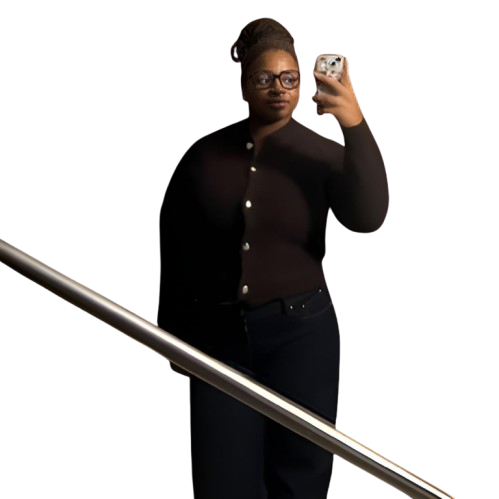
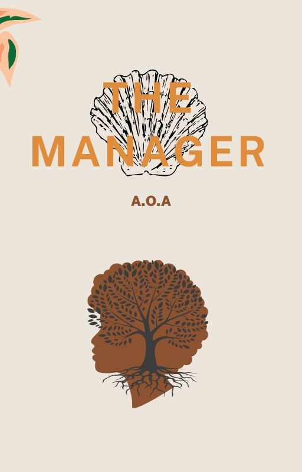
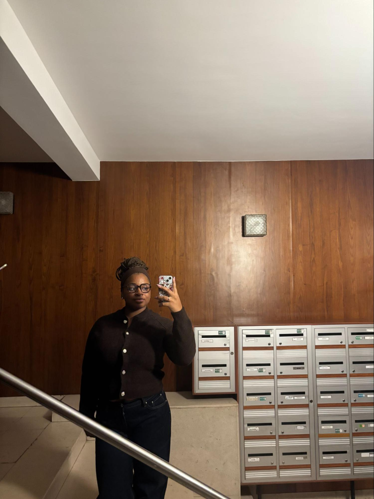
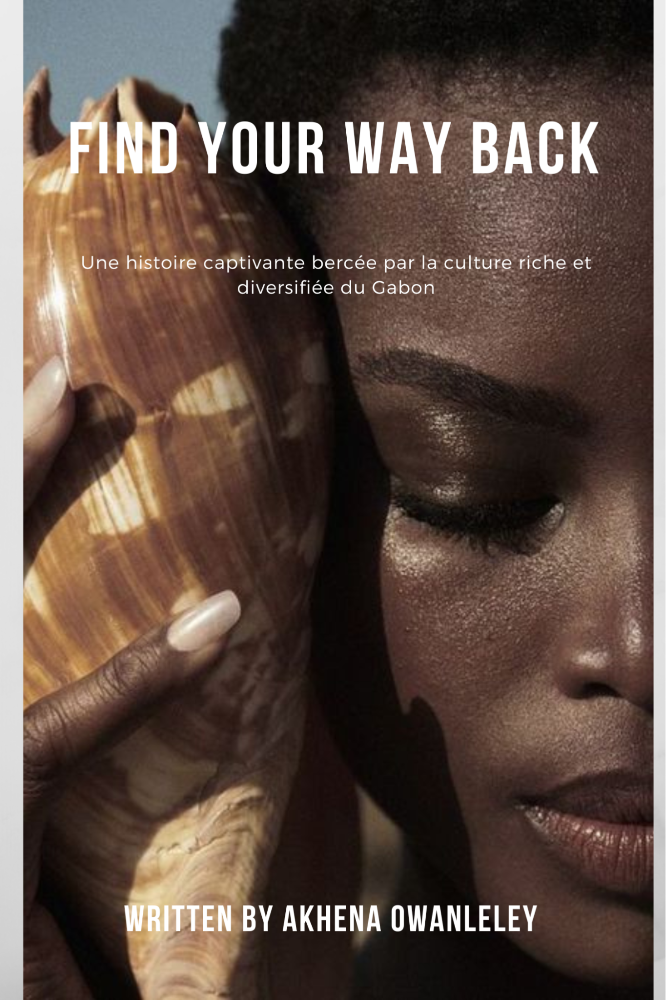
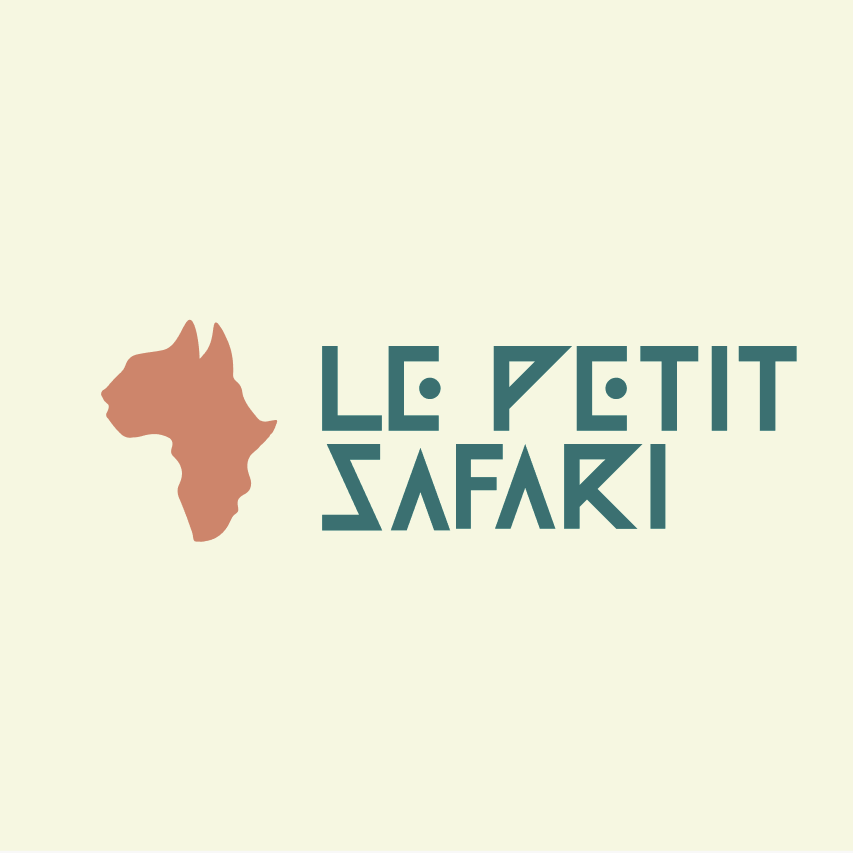
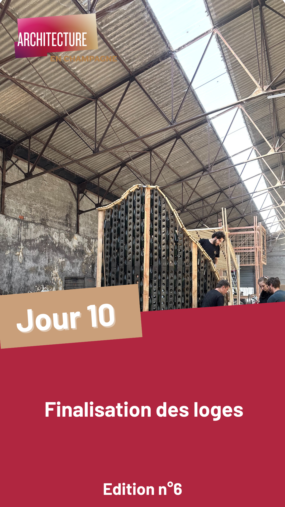
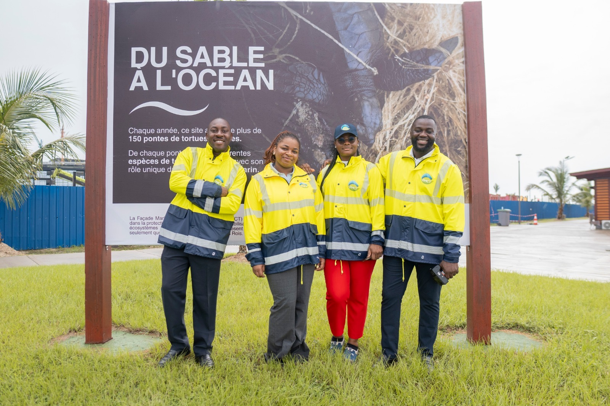
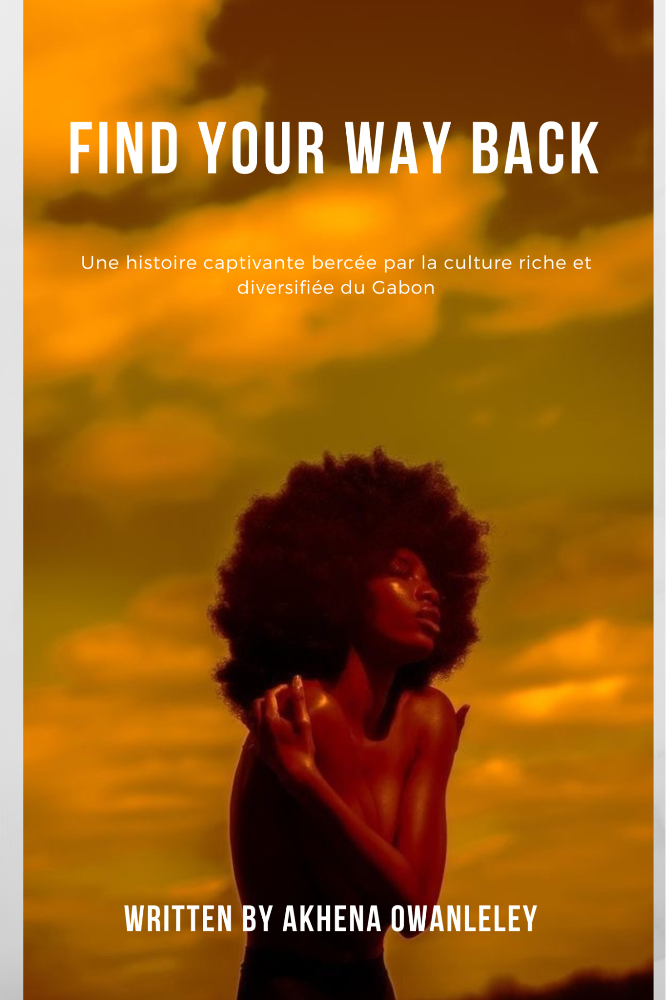

Hello ! Je m'appelle
Designeuse graphique
Par Akhena Owanleley

Derrière les projets, il y a une vraie personne
Si vous lisez ces lignes, c’est que vous avez entre les mains le résultat de plusieurs mois de caféine, de brainstormings intenses et de quelques crises de doute surmontées à coup de détermination. Bienvenue dans mon portfolio de fin d’études.
On nous apprend souvent qu’un examen, c’est une affaire de cases à cocher. Mais pour moi, ce dossier, c’est bien plus qu’une simple liste de compétences validées. C’est la preuve que j’ai survécu à cette formation (et avec le sourire, s'il vous plaît !), mais surtout que j’ai trouvé ma propre "vibe" dans le monde de la Communication, très souvent abrégée Com’😏.





Je fais partie de cette génération qui ne se contente pas du "ça fonctionne". Je suis celle qui va creuser, tester des trucs improbables et qui n'a pas peur de tout recommencer si l'idée n'est pas assez percutante. Ma personnalité ? Un mix d'optimisme à toute épreuve, d'une curiosité un peu envahissante et d'un besoin viscéral de mettre de l'humain dans tout ce que je crée.

